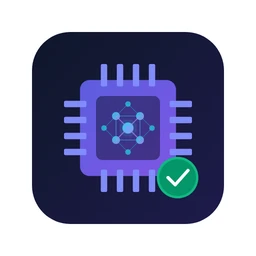

01
Choisir ta première IA locale
Tu lances llmfit, il affiche ton matériel en haut et tous les modèles classés dessous. Tu prends le premier marqué Perfect et tu appuies sur d : il part dans Ollama.
Scan du PC→Classement→Touche d

Il scanne ton PC et classe les IA locales qu'il peut vraiment faire tourner, de la meilleure à la moins bonne. Gratuit, open source, rien ne sort de chez toi.

llmfit répond à une seule question : quelle IA locale ton PC peut-il faire tourner ? Il détecte ton processeur, ta mémoire, ta carte graphique (NVIDIA, AMD, Intel, Apple Silicon), puis note des milliers de modèles sur quatre critères : place en mémoire, vitesse estimée, qualité et contexte. Chaque modèle reçoit un verdict, de Perfect à Too Tight (trop lourd), et la touche d le télécharge dans Ollama, llama.cpp ou LM Studio. Il ne fait pas tourner l'IA lui-même : c'est le guide qui t'évite de télécharger des dizaines de gigas pour rien.
Une commande : scoop ou winget sur Windows, brew sur Mac et Linux, ou le script d'installation. C'est là qu'il est utile : il analyse la machine qui fera tourner l'IA.
Recommandé, gratuitL'image officielle lance aussi un tableau de bord web et une API (port 8787). Pratique pour un serveur ou un NAS qui fera tourner Ollama : il note ce que cette machine-là peut supporter.
Pour un serveur IAuv tool install llmfit ou pip : même outil, pour ceux qui ont déjà Python. On peut aussi le compiler depuis les sources (Rust).
Pour les habituésTu lances llmfit, il affiche ton matériel en haut et tous les modèles classés dessous. Tu prends le premier marqué Perfect et tu appuies sur d : il part dans Ollama.
La simulation (touche S) remplace ta mémoire et ta carte graphique par celles que tu vises : tout le classement est recalculé. Le mode Plan fait l'inverse : quel matériel faut-il pour ce modèle ?
Le filtre d'usage (touche U, ou --use-case coding) donne plus de poids aux modèles bons en code : un petit modèle spécialisé peut passer devant un gros généraliste.
llmfit bench mesure les mots par seconde et le temps avant la première réponse sur ta machine. Tu peux partager tes résultats : les autres utilisateurs du même matériel en profitent.
llmfit recommend --json sort les meilleurs choix dans un format lisible par un programme, et llmfit serve ouvre une API : un agent peut choisir seul le modèle adapté à la machine.
Créé en février 2026 par Alex Jones, déjà fondateur de K8sGPT, un projet accueilli par la CNCF (la fondation qui héberge Kubernetes), llmfit a dépassé les 39 000 étoiles en neuf mois et a été classé n°1 sur Trendshift.
Plus de 1 100 commits, version 1.1.20 publiée le 3 novembre 2026, des mises à jour chaque semaine.
Plus de 39 000 étoiles, 2 500 forks et plus de 100 contributeurs ; des mesures de vitesse partagées par les utilisateurs.
Tout est calculé sur ta machine ; rien n'est envoyé sauf si tu télécharges un modèle ou partages tes mesures.
Gratuit, licence MIT, aucune offre payante ; le projet repose surtout sur son créateur et ses contributeurs bénévoles.
Neuf mois d'existence seulement ; vitesses estimées, mode cluster encore en aperçu, versions qui changent vite.
Comment on note : 5 critères notés sur 5, vérifiés sur GitHub, le README et la documentation officielle le 16 novembre 2026. La note sur 10 est la moyenne ramenée sur 10.
Bon pour : Classer des milliers de modèles selon ton matériel, puis les télécharger dans Ollama
Bon pour : Une appli tout-en-un : son catalogue indique si un modèle tient dans ta carte graphique
Bon pour : Une première idée en quelques secondes, sans rien installer
Bon pour : Un classement basé sur des benchmarks récents, pour les habitués de Python

Chaque vidéo RepoPop t'explique un dépôt GitHub utile en moins d'une minute, avec son kit comme celui-ci.